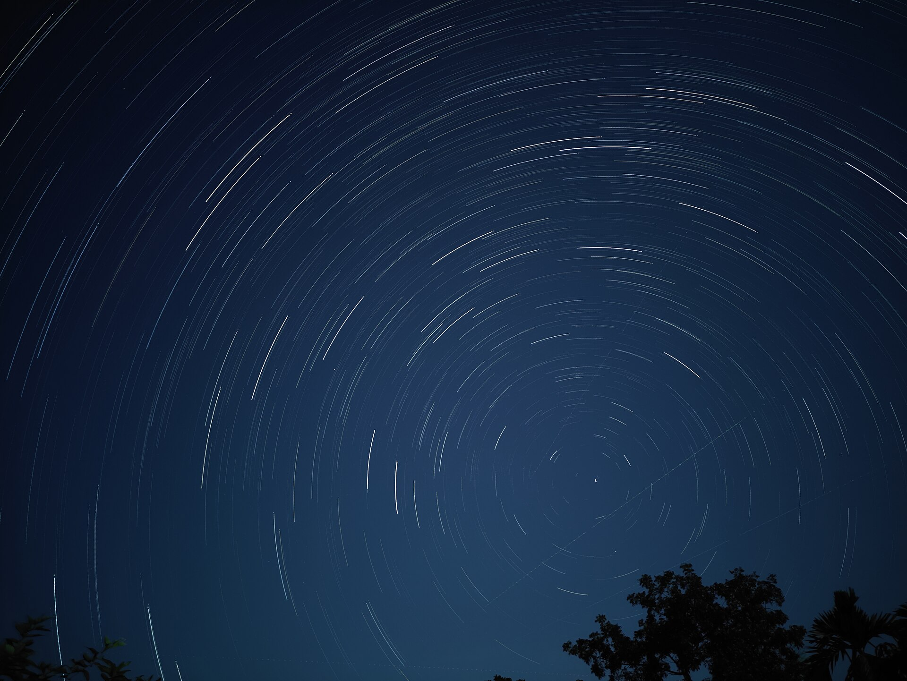

Ogni previsione di questo sito parte da un’unica immagine, il cielo come una sfera che ruota attorno a un asse. Con questa sola immagine possiamo già dire, per qualunque stella e qualunque luogo della Terra, se la stella sorge, quanto in alto sale e per quanto tempo resta sopra l’orizzonte.
1 · OsservazioneCerchi attorno a un punto
Se osservi il cielo per una notte, vedrai ogni stella sorgere a est, salire fino al punto più alto esattamente a sud (per un osservatore dell’emisfero nord) e tramontare a ovest. I percorsi sono cerchi, tutti paralleli fra loro, e le stelle mantengono le loro distanze reciproche mentre ruotano.


Tolomeo descrive la stessa osservazione: «la rivoluzione delle stelle sempre visibili, che si osservava essere circolare e svolgersi sempre attorno a un solo centro, lo stesso [per tutte]» (Almagest I 3). Quel centro è il polo celeste. Oggi Polaris si trova a 0,63° da esso, abbastanza vicino da segnare il polo a occhio nudo, ed è per questo che la chiamiamo stella polare.
Una stella torna nello stesso punto dopo 23 h 56 min 4 s di tempo dell’orologio, circa 4 minuti meno di un giorno, una differenza che spiega la pagina 1.3.
Il polo sta sopra il punto nord dell’orizzonte, a un’altezza pari alla latitudine geografica $\varphi$ dell’osservatore, per esempio 41,9° a Roma e 51,5° a Londra.
Poiché l’altezza del polo dipende dalla latitudine geografica, ne dipende anche la parte di cielo che possiamo vedere. Come dice Tolomeo, più si viaggia verso nord, «più stelle meridionali scompaiono e più stelle settentrionali appaiono» (Almagest I 4). Canopo, la seconda stella più luminosa, si vede da Rodi ma mai da Roma.
Il cielo settentrionale del 2026 attorno al polo celeste, visto da terra guardando in alto. In un giorno sidereo ogni stella compie un giro attorno al centro, in senso antiorario in questa vista.
Cerchio tratteggiato: declinazione 48,1°, cioè $90^\circ - \varphi$ per Roma. Le stelle al suo interno non tramontano mai a Roma; Capella, appena fuori, scende sotto l’orizzonte.
Nella figura
- anello
- ascensione retta in ore, crescente in senso orario vista da terra
- griglia
- declinazione ogni 10° da +30° a +80°, ascensione retta ogni 2 ore
- stelle
- tutte le stelle più luminose della magnitudine 4,6; più grandi se più luminose
- puntinato
- la Via Lattea, disegnata come una fascia attorno all’equatore galattico
Nella figura
- punteggiato
- il meridiano, per N, lo zenit Z e S
- blu
- l’equatore celeste
- rosso
- il cerchio diurno della stella scelta, tratteggiato sotto l’orizzonte
- viola
- i cerchi di Tolomeo delle stelle che non tramontano mai e che non sorgono mai
Lettura
- $\delta, H, a$
- declinazione, angolo orario e altezza della stella (sezione 2)
2 · ModelloUna sfera celeste che ruota
Direzioni, non distanze
Viste da qualunque punto della Terra, le stelle mantengono le stesse grandezze e le stesse distanze reciproche, quindi rispetto al cielo la Terra è un punto. Tolomeo trae la stessa conclusione dall’orizzonte: «i piani tracciati attraverso le linee di vista dell’osservatore […] che chiamiamo “orizzonti”, dividono sempre in due parti uguali l’intera sfera celeste» (Almagest I 6).
Una stella è quindi solo una direzione, un versore $\mathbf s$, e la sfera celeste è l’insieme di tutte queste direzioni, senza distanze. Nel modello greco l’intero insieme ruota rigidamente, a velocità costante, attorno a un asse.
Il cielo che ruota
Per descrivere la rotazione scegliamo un sistema di riferimento solidale con il cielo, con $z$ verso il polo P, $x$ verso il punto in cui l’equatore incrocia il meridiano sopra l’orizzonte, e $y$ verso est. Una rotazione di un angolo $\theta$ attorno all’asse $z$ è
Con $\theta > 0$, $R_z(\theta)$ porta l’asse $x$ verso l’asse $y$, dal meridiano verso est, il che, visto dall’esterno della sfera, sopra P, è una rotazione in senso antiorario.
Il cielo ruota nell’altro senso, perché una stella attraversa il meridiano e poi si sposta verso ovest. Visto da sopra P il cielo ruota in senso orario, anche se da terra, guardando verso il polo, lo stesso moto appare antiorario. Una rotazione di un angolo $H$ verso ovest è quindi una rotazione di $-H$ nel senso di $R_z$.
Una stella a distanza angolare $\delta$ dall’equatore attraversa il meridiano in $(\cos\delta, 0, \sin\delta)$. Sia $H$ l’angolo di cui il cielo ha ruotato da allora, l’angolo orario, che cresce di circa 15° all’ora. Allora la stella si trova in
$$\mathbf s(H) = R_z(-H) \begin{pmatrix} \cos\delta \\ 0 \\ \sin\delta \end{pmatrix} = \begin{pmatrix} \cos\delta\cos H \\ -\cos\delta\sin H \\ \sin\delta \end{pmatrix}.$$La componente $z$ non cambia mai, quindi ogni stella si muove su un cerchio parallelo all’equatore, come si osserva. L’angolo $\delta$ è la declinazione della stella, e la pagina 1.2 aggiunge la seconda coordinata, che fissa in quale punto del cerchio si trova la stella.
L’osservatore
L’osservatore ha un sistema di riferimento proprio, il sistema orizzontale, con $x$ verso il punto sud, $y$ verso est e $z$ verso lo zenit.
Puntiamo $x$ a sud perché, per un osservatore dell’emisfero nord, l’equatore incrocia il meridiano a sud dello zenit, quindi anche l’asse $x$ del sistema del cielo punta a sud. Con i due assi $x$ dalla stessa parte e l’asse est in comune, i due sistemi differiscono per una sola inclinazione. Un asse $x$ rivolto a nord costringerebbe $y$ a puntare a ovest, perché il sistema resti destrorso, e i segni meno comparirebbero ovunque. Anche Meeus (cap. 13) conta l’azimut da sud.
Il sistema del cielo è allora il sistema orizzontale inclinato attorno all’asse est–ovest, $y$, da una rotazione
$$R_y(\theta) = \begin{pmatrix} \cos\theta & 0 & \sin\theta \\ 0 & 1 & 0 \\ -\sin\theta & 0 & \cos\theta \end{pmatrix}, \qquad R_y(\theta) \begin{pmatrix} 0 \\ 0 \\ 1 \end{pmatrix} = \begin{pmatrix} \sin\theta \\ 0 \\ \cos\theta \end{pmatrix}.$$Per trovare l’angolo dell’inclinazione, osserviamo che essa deve portare la direzione dello zenit sul polo P. P sta sul meridiano ad altezza $\varphi$ a nord, quindi dista $90^\circ - \varphi$ dallo zenit, dalla parte nord ($-x$). Con $\theta > 0$, $R_y(\theta)$ inclina $z$ verso $+x$, il sud, ma a noi serve un’inclinazione di $90^\circ - \varphi$ verso nord, quindi $\theta = -(90^\circ - \varphi) = \varphi - 90^\circ$:
$$\mathbf s_\text{or} = R_y(\varphi - 90^\circ)\, \mathbf s.$$Tre controlli confermano i segni:
- Il polo: $R_y(\varphi - 90^\circ)(0, 0, 1)^T = (-\cos\varphi, 0, \sin\varphi)^T$, a nord ad altezza $\varphi$.
- Il punto dell’equatore sul meridiano: $R_y(\varphi - 90^\circ)(1, 0, 0)^T = (\sin\varphi, 0, \cos\varphi)^T$, a sud ad altezza $90^\circ - \varphi$.
- Al polo nord, $\varphi = 90^\circ$: nessuna inclinazione, e P è allo zenit.
L’altezza come prodotto scalare
L’altezza $a$ di una stella è il suo angolo sopra il piano dell’orizzonte. Lo zenit è perpendicolare a quel piano, quindi l’angolo fra la stella e lo zenit, la distanza zenitale, è $90^\circ - a$.
Per due versori il prodotto scalare è il coseno dell’angolo fra essi, quindi $\hat{\mathbf z} \cdot \mathbf s = \cos(90^\circ - a) = \sin a$. Nel sistema orizzontale $\hat{\mathbf z} = (0, 0, 1)$, e il prodotto scalare estrae semplicemente la componente $z$ di $\mathbf s_\text{or}$.
La stella è più semplice nel sistema del cielo, quindi spostiamo lì lo zenit. Una rotazione conserva i prodotti scalari, $(0,0,1)^T \cdot (R\,\mathbf s) = (R^T (0,0,1)^T) \cdot \mathbf s$, e il vettore $R^T(0, 0, 1)^T$ è la terza riga di $R_y(\varphi - 90^\circ)$, cioè lo zenit visto dal sistema del cielo, $\hat{\mathbf z} = (\cos\varphi, 0, \sin\varphi)$. Quindi
Ogni risultato di questa pagina, e la lettura dell’altezza nella Figura 2, discende da questa formula.
Una Terra che ruota dà le stesse altezze
Supponiamo invece che le stelle stiano ferme e che la Terra ruoti verso est attorno allo stesso asse. Allora la stella $\mathbf s_0$ è fissa e lo zenit si muove, $\hat{\mathbf z}(H) = R_z(H)\, \hat{\mathbf z}_0$. Poiché una rotazione conserva i prodotti scalari e $R_z(H)^T = R_z(-H)$,
$$\hat{\mathbf z}(H) \cdot \mathbf s_0 = \big(R_z(H)\, \hat{\mathbf z}_0\big) \cdot \mathbf s_0 = \hat{\mathbf z}_0 \cdot \big(R_z(-H)\, \mathbf s_0\big).$$L’altezza è la stessa in ogni istante, quindi nessuna osservazione del solo cielo può distinguere le due descrizioni. Tolomeo lo ammette, «forse non c’è nulla nei fenomeni celesti che contrasti con quell’ipotesi», e respinge la Terra che ruota per ragioni fisiche: una Terra che compie un giro al giorno supererebbe le nuvole e tutto ciò che viene lanciato in aria, che resterebbe indietro verso ovest (Almagest I 7).
Copernico, che attribuisce la Terra che ruota a Eraclide, Ecfanto e Iceta, enuncia la stessa equivalenza e assume che sia la Terra a ruotare: «se si attribuisce un qualche moto alla terra, in tutte le cose al di fuori di essa apparirà lo stesso moto, ma in direzione opposta» (De Revolutionibus I 5). Contro le nuvole di Tolomeo sostiene che l’aria vicina alla Terra ruota con essa (I 8), una risposta che Tolomeo aveva già considerato e respinto (I 7).
Le leggi del moto di Newton assumono la forma più semplice nei sistemi inerziali, che non ruotano con la Terra. Nel 1851 il pendolo di Foucault diede una dimostrazione diretta, sulla Terra stessa, della rotazione terrestre rispetto a tali sistemi, rispondendo al tipo di obiezione contro una Terra in rotazione che Tolomeo aveva sollevato. La meccanica newtoniana fa così della Terra che ruota e del cielo quasi fermo la descrizione più semplice. La rotazione diurna apparente del cielo resta una descrizione corretta delle osservazioni, a patto di tener conto degli effetti dovuti all’uso di un sistema di riferimento rotante.
Descriviamo comunque il cielo dalla Terra, perché è lì che si misura ogni altezza e ogni tempo di questo sito, e in un sistema solidale con il terreno è il cielo a ruotare. Copernico mantenne le stesse parole: «uso la terminologia consueta, che può essere accettata da tutti» (De Revolutionibus, prefazione al Libro II).
Nella figura
- blu
- l’equatore celeste
- verde
- l’orizzonte dell’osservatore, che ruota con lo zenit Z
- tratteggio
- il cerchio lungo il quale la rotazione della Terra porta Z verso est
Culminazioni, sorgere e tramonto
Una stella è più alta in $H = 0$, dove $\sin a = \cos(\varphi - \delta)$, e più bassa in $H = 180^\circ$, dove $\sin a = -\cos(\varphi + \delta)$:
$$a_\text{max} = 90^\circ - |\varphi - \delta|, \qquad a_\text{min} = |\varphi + \delta| - 90^\circ.$$Queste due altezze dividono le stelle in tre classi. Per un osservatore dell’emisfero nord ($\varphi > 0$) una stella non tramonta mai quando $a_\text{min} > 0$, e non sorge mai quando $a_\text{max} < 0$:
$$\text{non tramonta mai:}\ \ \delta > 90^\circ - \varphi, \qquad \text{non sorge mai:}\ \ \delta < \varphi - 90^\circ.$$È la regola di Tolomeo, enunciata con un cerchio: il cerchio «che ha come polo il polo nord dell’equatore, e come raggio l’elevazione del polo, è sempre visibile, e tutte le stelle all’interno di quel cerchio sono sempre visibili» (Almagest II 6).
Il suo cerchio è il cerchio minore centrato sul polo nord celeste con raggio angolare pari all’altezza del polo $\varphi$, quindi tocca appena l’orizzonte nel punto nord. Una stella al suo interno dista dal polo meno di $\varphi$, $90^\circ - \delta < \varphi$, che è di nuovo $\delta > 90^\circ - \varphi$.
Mentre il cielo ruota, una tale stella resta alla stessa distanza da P, quindi non raggiunge mai l’orizzonte. L’immagine speculare del cerchio, attorno al polo sud, contiene le stelle che non sorgono mai, e nella Figura 2 sono disegnati entrambi i cerchi, tratteggiati e viola.
Ogni altra stella sorge e tramonta. Tramonta quando $a = 0$, all’angolo orario $H_0$ con
$$\cos H_0 = -\tan\varphi \tan\delta,$$e resta sopra l’orizzonte per $|H| < H_0$, una frazione $f = H_0 / 180^\circ$ di ogni giro. Poiché $\arccos(-x) = 180^\circ - \arccos x$, una stella e la sua immagine speculare rispetto all’equatore si dividono il giro, $f(\delta) + f(-\delta) = 1$.
Sull’equatore stesso $\delta = 0$, quindi $H_0 = 90^\circ$ e $f = \tfrac12$ a ogni latitudine geografica. Per questo Tolomeo chiama l’equatore «il solo [di tali cerchi paralleli] che sia sempre diviso in due parti uguali dall’orizzonte» (Almagest I 8), e per questo il Sole, quando vi si trova, dà giorno e notte uguali.
(a) altezza durante un giro
(b) le tre classi di stelle
Nel pannello (b)
- linee
- stelle sopra l’orizzonte per il 25%, il 50% e il 75% del giro
3 · AdattamentoMisurare l’asse e le stelle
Per usare la sfera che ruota in un dato luogo dobbiamo misurarla lì, e ogni misura di cui ha bisogno si fa sul meridiano. Una stella attraversa quella linea fissa in un istante preciso, che un orologio può cronometrare, e in quel momento è alla sua altezza massima o minima, dove l’altezza smette per un attimo di cambiare e si può leggere. I passaggi danno la velocità della rotazione, la latitudine geografica $\varphi$, che è l’altezza del polo, e la declinazione $\delta$ di ogni stella.
La velocità. Cronometriamo la stessa stella mentre attraversa il meridiano in due notti, distanti il più possibile, perché l’errore di ogni misura di tempo viene allora diviso per il numero di giri fra le due. Vega attraversò il meridiano di Greenwich alle 1:58:14 UT del 1º giugno 1925 e alle 1:58:33 UT del 1º giugno 2025, 36·625 giri dopo. Un giro dura quindi 23 h 56 min 4,10 s di tempo dell’orologio, e il cielo ruota di 15,041° all’ora. Altre stelle luminose danno un giro più lungo al massimo di 0,005 s, una differenza dovuta alla precessione (pagina 2.3).
Latitudine geografica e declinazione insieme. Per queste prendiamo una stella che non tramonta mai e misuriamo le sue altezze $h_\uparrow$ e $h_\downarrow$ ai passaggi superiore e inferiore al meridiano. Entrambe sono contate dal punto nord, così che una sola formula valga per tutte e due, e quella superiore può superare 90°. Le formule di $a_\text{max}$ e $a_\text{min}$ danno allora
Proviamo con Kochab vista da Alessandria, dove il cielo reale la mostra a 47,166° e 15,309° sopra il punto nord. L’adattamento dà $\varphi = 31{,}238^\circ$ e $\delta = 74{,}071^\circ$, 2,3′ e 1,3′ troppo grandi. L’atmosfera solleva entrambi i passaggi, il che rende troppo grande la loro media, e quindi $\varphi$; solleva di più quello basso, il che riduce la loro differenza e rende $\delta$ troppo grande. Questo effetto è la rifrazione, l’argomento della Verifica.
StoriaCome Tolomeo misurava le altezze
Tolomeo misurava la distanza del Sole di mezzogiorno dallo zenit su un anello di bronzo, diviso in gradi e posto verticale nel piano del meridiano, con un anello interno che si girava finché l’ombra di una delle sue piastrine cadeva sull’altra. Usava anche una lastra di pietra o di legno con un quadrante disegnato sopra, sulla quale un piolo proietta la sua ombra di mezzogiorno (Almagest I 12).
L’equatore sta a metà fra le posizioni del Sole di mezzogiorno ai due solstizi. Per Alessandria, dove osservava, Tolomeo dà la sua distanza dallo zenit, che è la latitudine geografica, come 30°58′ (Almagest V 12), circa un quarto di grado sotto il valore moderno.
4 · VerificaIl modello contro il cielo
Confrontiamo il modello con il cielo di riferimento per una notte del 2026, in cui la posizione di catalogo di ogni stella è portata a quella data e ruotata dalla rotazione terrestre. Alla stella del modello diamo la stessa declinazione, quindi ciò che resta è l’effetto dell’atmosfera, che il modello trascura.
La luce delle stelle si piega entrando nell’atmosfera, tanto più quanto più arriva bassa, quindi una stella appare più alta di quanto sia. Per l’aria standard questa rifrazione è
È la formula di Sæmundsson (Meeus 16.4). La rifrazione cala in fretta con l’altezza: una stella vista esattamente sull’orizzonte è in realtà 34′ sotto di esso, ma a 45° lo spostamento è solo di 1′. Altri effetti, come l’aberrazione e la nutazione, spostano una stella di meno di 1′ e della stessa quantità per tutta la notte, quindi l’adattamento li assorbe.
La stella del modello è alla sua altezza vera $a$, mentre il cielo la mostra ad $a + R$. L’errore del modello è quindi $\Delta a = a_\text{modello} - a_\text{reale} = -R$, così la Figura 5 mostra la rifrazione stessa, seguita durante un giro del cielo. La tracciamo come un errore, modello meno cielo, come faremo per ogni errore di questo sito.
Nella figura
- punti
- il sorgere e il tramonto del modello
- punti
- il sorgere e il tramonto reali
Lettura
- $\Delta t$
- di quanto prima sorge la stella reale, e di quanto dopo tramonta
Per una stella alta nel cielo l’errore è sotto i 3′, ma sull’orizzonte arriva a 34′, quindi le stelle reali sorgono prima e tramontano dopo quelle del modello. Vista da Roma, Sirio resta sopra l’orizzonte 7 minuti di più.
Una stella che attraversa l’orizzonte con un angolo piccolo impiega più tempo a salire di quei 34′. Canopo, vista da Rodi, sale solo di 1,3°, e sorge 14 minuti prima e tramonta 14 minuti dopo quanto prevede il modello.
5 · ResiduoCiò che la sfera trascura
La rifrazione è un effetto dell’atmosfera, e vicino all’orizzonte cambia con il tempo meteorologico di vari primi d’arco. I modelli di questo sito prevedono quindi le posizioni come se non ci fosse aria, e le pagine che calcolano il sorgere e il tramonto aggiungono di nuovo $R$.
Le declinazioni che ricaviamo non restano valide, perché le stelle «fisse» si spostano. Polaris, oggi a meno di un grado dal polo, ne distava più di 12° al tempo di Ipparco. La pagina 2.3 ne trova la causa.
Anche il Sole, la Luna e i pianeti si muovono fra le stelle. Ruotano con la sfera ma non mantengono il loro posto su di essa, un secondo moto che Tolomeo descrive come «verso est e opposto [al moto di] quelle stelle che conservano le loro distanze reciproche» (Almagest I 8).
Per seguire un tale corpo ci servono due coordinate solidali con la sfera: la declinazione, e una seconda al posto dell’angolo orario, che cambia mentre il cielo ruota. Ci servono anche formule per passare da un sistema di coordinate all’altro. La pagina 1.2 si chiede come sceglierle.
Esercizi
Mostra che, per $\varphi > 0$, una stella non tramonta mai esattamente quando $\delta > 90^\circ - \varphi$, e non sorge mai esattamente quando $\delta < \varphi - 90^\circ$. Poi, con la Figura 2, classifica Dubhe, Capella, Deneb, Vega e Canopo a Rodi ($36^\circ$), Roma ($41{,}9^\circ$) e Londra ($51{,}5^\circ$).
Una stella non tramonta mai quando anche il suo punto più basso è sopra l’orizzonte: usa $a_\text{min} = |\varphi + \delta| - 90^\circ$, e spiega perché $\varphi + \delta > 0$ per una tale stella.
Se la stella non tramonta mai, il suo punto più basso è sopra l’orizzonte, quindi $a_\text{min} > 0$, cioè $|\varphi + \delta| > 90^\circ$. Con $\varphi > 0$ e $|\delta| \le 90^\circ$, il caso $\varphi + \delta < -90^\circ$ è impossibile, quindi $\varphi + \delta > 90^\circ$, cioè $\delta > 90^\circ - \varphi$.
Allo stesso modo non sorge mai quando $a_\text{max} < 0$: $|\varphi - \delta| > 90^\circ$. È possibile solo $\varphi - \delta > 90^\circ$, quindi $\delta < \varphi - 90^\circ$.
Con le declinazioni J2000 (Dubhe $61{,}75^\circ$, Capella $46{,}00^\circ$, Deneb $45{,}28^\circ$, Vega $38{,}78^\circ$, Canopo $-52{,}70^\circ$):
- Rodi: solo Dubhe non tramonta mai (punto più basso $7{,}75^\circ$); Canopo sorge, ma sale solo di $1{,}30^\circ$.
- Roma: solo Dubhe non tramonta mai ($13{,}65^\circ$); Capella scende appena sotto ($-2{,}10^\circ$); Canopo non sorge mai ($a_\text{max} = -4{,}60^\circ$).
- Londra: Dubhe, Capella, Deneb e Vega non tramontano mai, Vega per poco (il suo punto più basso è a $0{,}28^\circ$); Canopo non sorge mai.
Capella non tramonta mai a nord di $44{,}00^\circ$, Vega a nord di $51{,}22^\circ$. Canopo si vede solo a sud di $37{,}30^\circ$.
(a) Per quale frazione del giorno Sirio ($\delta = -16{,}72^\circ$) è sopra l’orizzonte ad Alessandria ($31{,}2^\circ$), a Roma e a Londra? (b) Tolomeo prende Rodi a $\varphi = 36^\circ$ con l’obliquità $\varepsilon = 23^\circ 51' 20''$ ($23{,}856^\circ$), la declinazione del Sole al solstizio d’estate. Trova il giorno più lungo (Almagest II 2–3). Verifica entrambi nella Figura 4.
$f = H_0 / 180^\circ$ con $\cos H_0 = -\tan\varphi\tan\delta$. Per il Sole, l’angolo orario cresce di $15^\circ$ per ogni ora dell’orologio.
(a) $-\tan\varphi\tan\delta$ vale $0{,}1819$ ad Alessandria, $0{,}2695$ a Roma e $0{,}3776$ a Londra. Quindi $H_0 = 79{,}52^\circ$, $74{,}37^\circ$ e $67{,}82^\circ$, e $f = 0{,}442$, $0{,}413$ e $0{,}377$. Su un orologio (un giro dura 23 h 56 min) sono 10 h 34 min, 9 h 53 min e 9 h 01 min.
(b) $-\tan 36^\circ \tan 23^\circ 51' 20'' = -0{,}3213$, quindi $H_0 = 108{,}741^\circ$. Il Sole resta sopra l’orizzonte per $2H_0 / 15^\circ = 14{,}4988$ ore: le $14\tfrac12$ ore di Tolomeo. Il giorno più corto, a $\delta = -\varepsilon$, dura $24 - 14{,}4988 = 9{,}5012$ ore, come richiede $f(\delta) + f(-\delta) = 1$.
Tolomeo fa anche il calcolo inverso (II 3): un giorno più lungo di $14\tfrac12$ ore dà $\varphi = 36{,}01^\circ$.
A un equinozio il Sole è sull’equatore, quindi il modello dà 12 ore di luce ovunque. Eppure il 20 marzo 2026 a Greenwich ($\varphi = 51{,}48^\circ$) il Sole reale sorge alle 06:02:53 e tramonta alle 18:13:03 (UT): 12 h 10 min. Da dove vengono i 10 minuti in più?
Il sorgere del Sole è l’istante in cui ne appare il bordo superiore; il raggio del Sole è 16′. Quanto in fretta sale il Sole al sorgere? Deriva la formula dell’altezza rispetto ad $H$.
Il sorgere e il tramonto si contano quando il bordo superiore del Sole tocca l’orizzonte visibile. Il centro è allora $34' + 16' = 50'$ sotto l’orizzonte vero: rifrazione più raggio.
Quanto in fretta sale lì il Sole? Deriviamo $\sin a = \sin\varphi \sin\delta + \cos\varphi\cos\delta\cos H$:
$$\cos a \, \frac{da}{dH} = -\cos\varphi \cos\delta \sin H.$$Al sorgere, all’equinozio, $a \approx 0$, $\delta = 0$ e $H = -90^\circ$ (un quarto di giro prima di mezzogiorno), quindi $da/dH = \cos\varphi$. L’angolo orario del Sole cresce di $15^\circ$ all’ora, quindi sale di $15^\circ \cos\varphi = 9{,}34^\circ$ all’ora a Greenwich.
Geometricamente: il Sole corre lungo l’equatore a $15^\circ$ all’ora, e l’equatore taglia l’orizzonte nel punto est con un angolo di $90^\circ - \varphi$. Solo la parte $\sin(90^\circ - \varphi) = \cos\varphi$ di quel moto è verso l’alto.
Salire di 50′ ($0{,}833^\circ$) a $9{,}34^\circ$ all’ora richiede circa 5,4 min, a ciascun capo del giorno: circa 10,7 min in tutto.
Lo script divide esattamente le 12 h 10 min 10 s del Sole di riferimento:
- rifrazione: +7,3 min;
- il raggio del Sole: +3,4 min;
- il moto proprio del Sole quel giorno: −0,5 min. A mezzogiorno è appena a sud dell’equatore, e il suo giorno non è un giro delle stelle.
I minuti in più non vengono dal cielo che ruota, che il modello descrive correttamente: il modello non ha atmosfera e tratta il Sole come un punto.
Fonti
- Tolomeo, Almagest (trad. ingl. G. J. Toomer, 1984): I 3, I 4, I 6, I 7, I 8 (la sfera, la Terra come un punto, i due moti); I 12 (gli strumenti meridiani); II 1–3 e II 6 (la latitudine geografica, il giorno più lungo a Rodi, il cerchio sempre visibile); V 12 (Alessandria).
- Copernico, De Revolutionibus (trad. ingl. E. Rosen), I 5 [ff. 3r–3v] (il moto dell’osservatore e la Terra che ruota); I 8 [f. 6r] (l’aria ruota con la Terra); la prefazione al Libro II [f. 27v] (la terminologia consueta).
- L. Foucault, "Démonstration physique du mouvement de rotation de la Terre au moyen du pendule", Comptes rendus de l'Académie des sciences 32 (1851).
- R. Fitzpatrick, A Modern Almagest, §§ 2.1–2.2 e 2.8–2.10. Scrive $L$ per la latitudine geografica, qui $\varphi$.
- J. Meeus, Astronomical Algorithms (2ª ed., 1998), cap. 12 (tempo siderale), 13 (altezza), 15 (sorgere e tramonto), 16 (rifrazione).
- Posizioni delle stelle: SIMBAD (CDS, Strasburgo), ICRS J2000, consultato il 17 ottobre 2026. Precessione: J. Vondrák, N. Capitaine, P. Wallace (2011).
- Ogni numero di questa pagina:
tools/numbers/1.1-turning-sky.js.